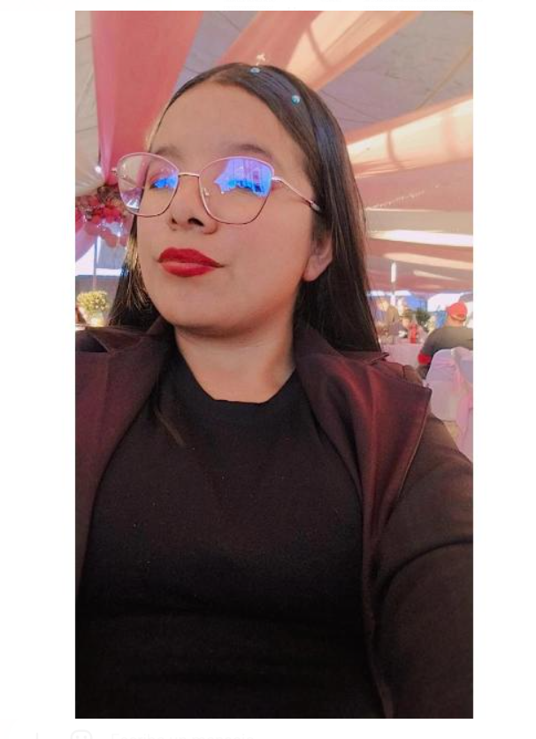

Mentes detrás de BRIQO

|


Ingeniería en Software & Soluciones Web.
Especialista en el desarrollo de ecosistemas digitales para proyectos de alto impacto sustentable.
El nombre se eligió por su relación directa con "Brick" (ladrillo). Es una adaptación corta y moderna que simboliza la nueva era de la construcción.
QO representa el enfoque humano y ecológico: no es un bloque cualquiera, es una solución de diseño para interiores que da un nuevo propósito a la ropa en desuso.
"Convertimos ropa en desuso y dañada en ladrillos sólidos para diseño de interiores, dándoles una segunda vida útil en muros decorativos y oficinas."
Proceso: Recolección → Trituración → Mezcla con polímeros → Compactación.

Reducción masiva de CO2 al evitar la quema de textiles en Tepexi e Ixcaquixtla.
Ladrillos hidrófugos con alta capacidad de carga y aislamiento acústico.
Perfectos para acabados industriales modernos en interiores residenciales.


Reutiliza ropa en desuso que normalmente se desecha, reduciendo residuos textiles.
Fomenta el uso de materiales sustentables para crear espacios responsables con el medio ambiente.
Desarrolla un material innovador al transformar residuos textiles en un producto funcional.
Contribuye a disminuir la contaminación y el impacto ambiental al reducir desechos.
Modificamos de manera significativa la composición tradicional al incorporar ropa reciclada como materia prima. Altera profundamente la estructura y propuesta de valor del sector construcción.
Aprovecha materiales existentes, reduce la extracción de materias primas y fomenta la economía circular.
Vegetales (Algodón, Lino), Animales (Lana) y Minerales.
Poliéster, Nylon, Acrílico y Elastano (Derivados del petróleo).
Identificación de fibras, revisión de tintes y medición de humedad post-trituración.
Ensayos de resistencia a compresión, flexión, densidad y absorción de agua.
Pruebas acústicas y ensayos de resistencia al fuego para materiales textiles.
Modifica significativamente la composición del ladrillo tradicional. No es una pequeña mejora, es un cambio de paradigma en el material y proceso de fabricación.
Análisis de Materia Prima
Resistencia y Densidad
Resistencia al Fuego
Sometemos cada lote a pruebas de compresión axial. Nuestra fórmula textil-polimérica garantiza que el ladrillo no se fracture, sino que se flexione bajo presión extrema.
Compresión: 120kg
Ignífugo: Grado A
BRIQO elimina el 100% de los residuos textiles recolectados en la Mixteca, evitando que terminen en vertederos clandestinos o sean incinerados de forma tóxica.
Nuestra mezcla textil reduce la temperatura interna de los hogares hasta 4°C, bajando el consumo de energía eléctrica y aires acondicionados en climas cálidos.
Kilos de ropa reciclada
De CO₂ anuales evitados
Pruebas químicas en el ITSR Tepexi.
Validación de ladrillos en escala real.
Planta piloto en Ixcaquixtla.
Distribución a nivel Estatal.
Desarrollar ladrillos ecológicos a partir de ropa en desuso, transformando residuos textiles en materiales de construcción funcionales, con el fin de reducir el impacto ambiental y fomentar el uso de alternativas sostenibles.
Ser una empresa reconocida en el estado por innovar en la fabricación de materiales ecológicos, posicionando nuestros ladrillos como una solución sustentable en diversos espacios de diseño de interiores.
| Parámetro Técnico | Ladrillo BRIQO | Tabique Rojo | Block Cemento |
|---|---|---|---|
| Resistencia Térmica | Alta (Aislante) | Baja | Nula |
| Peso Estructural | -25% Ligero | Pesado | Muy Pesado |
| Salitre / Hongos | Inmune | Vulnerable | Medio |
Nuestro ladrillo ha sido sometido a pruebas de estrés mecánico en laboratorio, superando los estándares de construcción regional.
"La estructura molecular del PET triturado combinada con la fibra textil crea una malla de refuerzo interna que evita grietas."
Dictamen ITSR 2026
A diferencia del concreto rígido, la matriz de BRIQO posee un coeficiente de elasticidad superior. En sismos, las fibras textiles absorben la energía vibratoria, reduciendo la propagación de grietas críticas.
Calcula cuántos ladrillos podemos fabricar con tu ropa en desuso.
Respaldado por instituciones líderes
Aporta flexibilidad molecular y actúa como un amortiguador térmico natural dentro de la mezcla.
Funciona como el agente aglutinante principal, otorgando impermeabilidad total al ladrillo.
Proporciona la dureza estructural necesaria para soportar muros de carga de hasta dos niveles.
Garantiza la unión química entre el plástico y el cemento para evitar desprendimientos.
Sí. El material textil está encapsulado en una matriz inorgánica que actúa como retardante, cumpliendo con normas de seguridad civil.
Estimamos una durabilidad superior a los 100 años, ya que el PET y las fibras sintéticas no se degradan con la humedad del suelo.
Al ser un material 20% más ligero, reducimos el consumo de diésel por viaje en un 15% comparado con el block pesado.
Fomentamos la economía local en Ixcaquixtla mediante la red de recolección de polímeros urbanos.
El 100% de la merma de obra puede ser reintegrada a nuestra planta para fabricar nuevos ladrillos.
"En Tepexi el calor es intenso. Con los muros de BRIQO, mis clientes notan el cambio de temperatura al instante. Es más fresco."
Ing. Manuel R.
Constructor Local
"Validamos las pruebas en el laboratorio del ITSR. La cohesión de la fibra textil con el polímero es un avance de ingeniería real."
Dra. Claudia S.
Investigadora ITSR
"Lo mejor es que mis hijos ya no ven ropa tirada en la calle, ahora saben que se puede convertir en una casa."
Familia García
Habitantes Ixcaquixtla